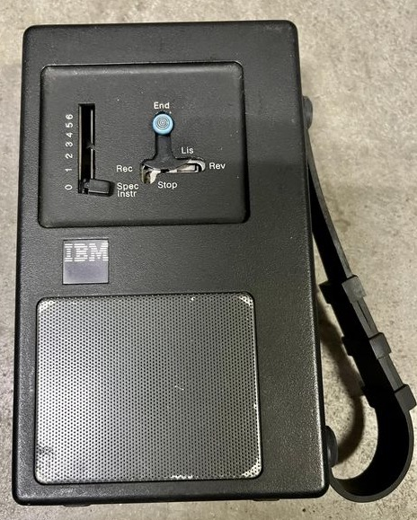
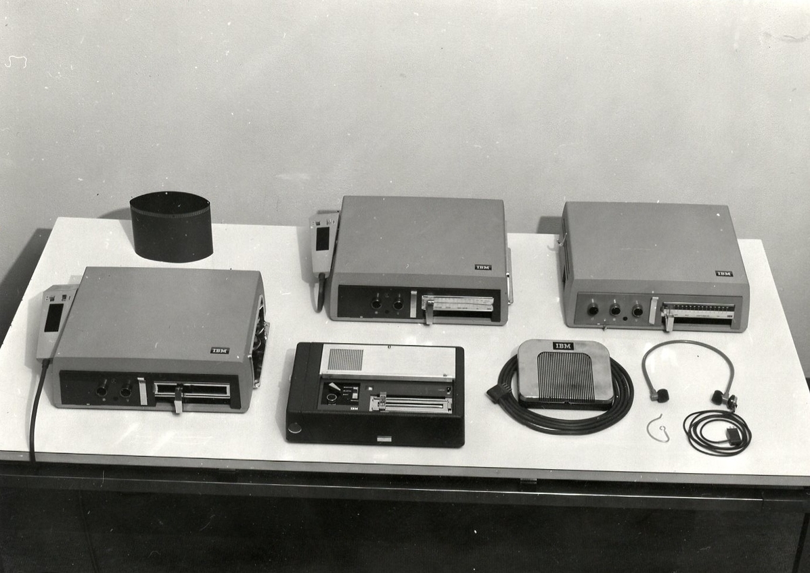
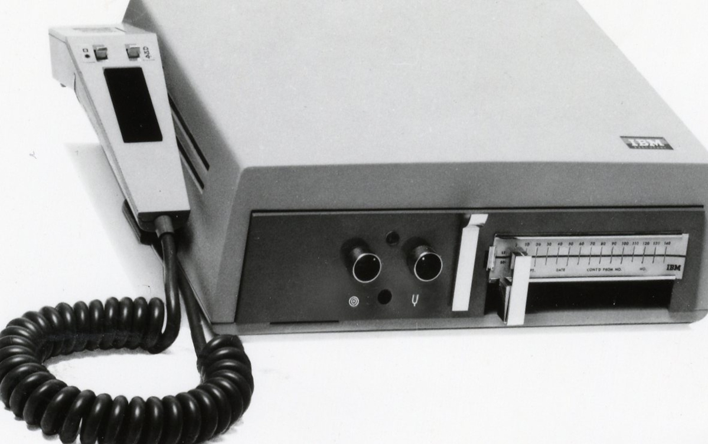

IBM 6:5 Cartridge System (1975)
The office dictation machine that stored your voice on magnetic discs you could color-code, mark urgent, and mail

Overview
The IBM 6:5 Cartridge System, announced in March 1975 by IBM's Office Products Division, was a dictation and transcription system built around an unusual storage medium. Where competitors used endless loops of magnetic tape, the 6:5 recorded each piece of dictation onto a six-minute magnetic disc, and twenty-five of those discs were packed into a cartridge the size and shape of a floppy disk. The name "6:5" encodes the economics: each disc holds six minutes of speech, and a recorder fitted with two cartridge readers could carry five hours of dictation.
The 6:5 was sold as a family — the Recorder Type 281, the Transcriber Type 282 (which shipped with a foot pedal and headset), and the Portable Recorder Type 284 — plus a range of remote-control units (Tone Control, Dial Control, Micro Control) that let people telephone in and dictate over the phone. The American Nurses Association was a documented customer. IBM called the launch its most extensive advertising campaign in Office Products Division history. The range was withdrawn on December 31, 1981, having spanned the museum's window.
Deep dive
Each six-minute magnetic disc (IBM insisted on the spelling "disc") was about 3 1/4 inches across, and twenty-five of them lived inside a floppy-shaped cartridge. Because dictation was segmented disc by disc, a cartridge came in five colors so different jobs, people, or priorities could be distinguished at a glance — and a disc or cartridge could be marked urgent and physically routed for rush transcription. The human voice had to be poured into an object to travel, and that object could be sorted, stacked, flagged, and mailed.
Transcription on the 6:5 was a full-body workflow that has all but vanished. The transcriptionist sat with both hands on a keyboard, a headset over the ears, and a foot pedal on the floor. Playback was driven entirely by the foot — press to play, ease off to pause, heel for rewind — so the hands never left the keys. The interface was split across three body channels at once: fingers for output, foot for transport control, ears for input. It is the canonical bimanual-plus-foot office interface, and the 6:5 was one of its most polished commercial embodiments.
The 6:5 cartridge is an almost perfect material echo of the floppy disk, but for voice rather than data. IBM designed it (with Eliot Noyes & Associates, who had styled the earlier Executary line) to be handled, color-coded, stacked, and mailed — the same physical-token instinct the museum celebrates in Cauzin's printed barcodes, the Dallas iButton, and Ascom's notched QuickFare ticket. It is a reminder that in the 1970s, like data, the human voice had to become a thing you could hold.
Media

